The aim of this tutorial is to demonstrate the solution of the time-harmonic equations of linear elasticity in Cartesian coordinates. These equations are useful to describe forced, time-harmonic oscillations of elastic bodies. The implementation extends the standard formulation discussed in another tutorial, which is modified to incorporate perfectly matched layers (PMLs) as an alternative to classical absorbing/approximate boundary conditions or DtN maps.
We first present details on the relevant theory and its extensions and proceed with an example problem of time-harmonic oscillations on an infinite domain with an interior circular boundary.
Theory
Consider an infinite, linearly elastic body (of density  , Young's modulus
, Young's modulus  and Poisson's ratio
and Poisson's ratio  ), occupying the region
), occupying the region  whose inner boundary is 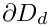. Assuming that the body performs time-harmonic oscillations of frequency of
whose inner boundary is 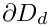. Assuming that the body performs time-harmonic oscillations of frequency of  its motion is governed by the equations of time-harmonic linear elasticity
its motion is governed by the equations of time-harmonic linear elasticity
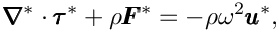
where the  are the Cartesian coordinates, and the time-periodic stresses, body force and displacements are given by 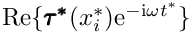, 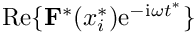 and 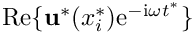 respectively. Note that, as usual, the superscript asterisk notation is used to distinguish dimensional quantities from their non-dimensional counterparts where required.
are the Cartesian coordinates, and the time-periodic stresses, body force and displacements are given by 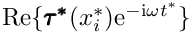, 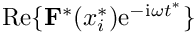 and 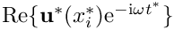 respectively. Note that, as usual, the superscript asterisk notation is used to distinguish dimensional quantities from their non-dimensional counterparts where required.
The body is subject to imposed time-harmonic displacements  along . This requires that
along . This requires that
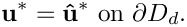
The stresses and displacements are related by the constitutive equations
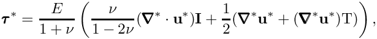
where 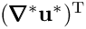 represents the transpose of
We non-dimensionalise the equations, using a problem specific reference length,  , and a timescale
, and a timescale  , and use Young's modulus to non-dimensionalise the body force and the stress tensor:
, and use Young's modulus to non-dimensionalise the body force and the stress tensor:
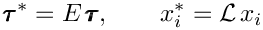
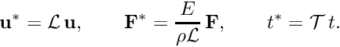
The non-dimensional form of the equations is then given by
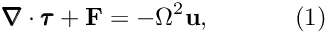
with the non-dimensional constitutive relation,
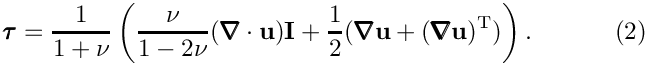
The non-dimensional parameter
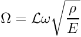
is the ratio of the elastic body's intrinsic timescale, 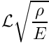, to the problem-specific timescale, , that we used to non-dimensionalise time.  can be interpreted as a non-dimensional version of the excitation frequency; alternatively/equivalently 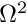 may be interpreted as a non-dimensional density. The boundary conditions are set as
can be interpreted as a non-dimensional version of the excitation frequency; alternatively/equivalently 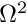 may be interpreted as a non-dimensional density. The boundary conditions are set as
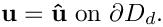
Perfectly matched layers
The idea behind perfectly matched layers is illustrated in the figure below. The actual physical/mathematical problem has to be solved in the infinite domain (shown on the left), with a boundary condition at a certain distance from the source of the waves ensuring the suitable decay of the solution at large distances from the region of interest.
If computations are performed in a finite computational domain,  , (shown in the middle), spurious wave reflections are likely to be generated at the artificial boundary 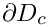 of the computational domain.
, (shown in the middle), spurious wave reflections are likely to be generated at the artificial boundary 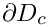 of the computational domain.
The idea behind PML methods is to surround the actual computational domain with a layer of "absorbing" material whose properties are chosen such that the outgoing waves are absorbed within it, without creating any artificial reflected waves at the interface between the PML layer and the computational domain.

Our implementation of the perfectly matched layers follows the development in A. Bermudez, L. Hervella-Nieto, A. Prieto, and R. Rodriguez "An optimal perfectly matched layer with unbounded absorbing function for time-harmonic acoustic scattering problems" Journal of Computational Physics 223 469-488 (2007) and we assume the boundaries of the computational domain to be aligned with the coordinate axes, as shown in the sketch above.
The method requires a slight generalisation of the equations, achieved by introducing the complex coordinate mapping
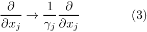
within the perfectly matched layers.
The choice of 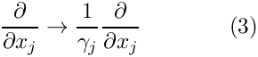 depends on the orientation of the PML layer. Since we are restricting ourselves to axis-aligned mesh boundaries we need to distinguish three different cases, as shown in the sketch below:

We follow the work of U. Basu and A. Chopra "Perfectly matched layers for time-harmonic elastodynamics of unbounded domains: theory and finite-element implementation", Computer Methods in Applied Mechanics and Engineering 192 1337-1375(2003) and choose:
- For layers that are aligned with the y axis (such as the left and right PML layers in the sketch, with vertical stripes) we set
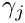
where 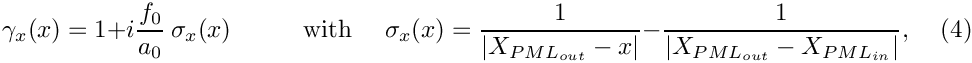, 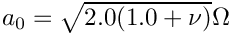 is a constant to be tuned, is the x-coordinate of the inner boundary of the PML layer (the coordinate of the interface with the physical domain), 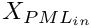 is the x-coordinate of the outer boundary of the PML layer , and
is the x-coordinate of the inner boundary of the PML layer (the coordinate of the interface with the physical domain), 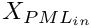 is the x-coordinate of the outer boundary of the PML layer , and 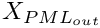
- For layers that are aligned with the x axis (such as the top and bottom PML layers in the sketch, with horizontal stripes) we set
and![\[ \gamma_x = 1, \]](form_37.png)
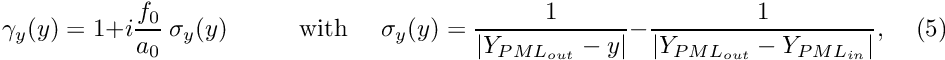
where 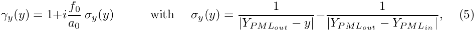 is the y-coordinate of the outer boundary of the PML layer. - In corner regions (diagonally striped) that are bounded by two axis-aligned PML layers (with outer coordinates 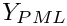 and
) we set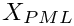
and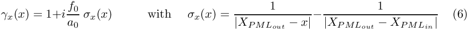
- Finally, in the actual computational domain (outside the PML layers) we set
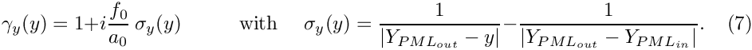
In our numerical experiments  was found to be an appropriate value, which gives acceptable numerical behaviour. This is well aligned with the cited paper, where this parameter ranges from roughly 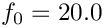 to 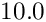.
was found to be an appropriate value, which gives acceptable numerical behaviour. This is well aligned with the cited paper, where this parameter ranges from roughly 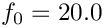 to 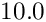.
Implementation of the perfectly matched layers within oomph-lib
The finite-element-discretised equations (modified by the PML terms discussed above) are implemented in the PMLTimeHarmonicLinearElasticityEquations<DIM> class which is templated by the spatial dimension, DIM. As usual, we provide fully functional elements by combining these with geometric finite elements (from the Q and T families – corresponding (in 2D) to triangles and quad elements). By default, the PML modifications are disabled, i.e. 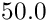 and 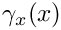 are both set to 1.
The generation of suitable 2D PML meshes along the axis-aligned boundaries of a given bulk mesh is facilitated by helper functions which automatically erect layers of (quadrilateral) PML elements. The layers are built from QPMLTimeHarmonicLinearElasticityElement<2,NNODE_1D> elements and the parameter NNODE_1D is automatically chosen to match that of the elements in the bulk mesh. The bulk mesh can contain quads or triangles (as shown in the specific example presented below).
For instance, to erect a PML layer (of width width, with n_pml elements across the width of the layer) on the "right" boundary (with boundary ID b_bulk) of the bulk mesh pointed to by bulk_mesh_pt, a call to
returns a pointer to a newly-created mesh that contains the PML elements which are automatically attached to the boundary of the bulk mesh (i.e. the Nodes on the outer boundary of the bulk mesh are shared (pointed to), rather than duplicated, by the elements in the PML mesh). The PML-ness of the elements is automatically enabled, i.e. the functions  and 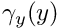 are set as described above. Finally, zero Dirichlet boundary conditions are applied to the real and imaginary parts of the solution on the outer boundary of the PML layer.
and 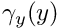 are set as described above. Finally, zero Dirichlet boundary conditions are applied to the real and imaginary parts of the solution on the outer boundary of the PML layer.
Similar helper functions exist for PML layers on other axis-aligned boundaries, and for corner PML meshes; see the code listings provided below. Currently, we only provide this functionality for convex 2D computational domains, but the generalisation to non-convex boundaries and 3D is straightforward (if tedious) to implement (Any volunteers?).
Implementation
Within oomph-lib, the non-dimensional version of equations (1) with the constitutive equations (2) are implemented in the PMLTimeHarmonicLinearElasticityEquations<DIM> equations class, where the template parameter DIM indicates the spatial dimension. Following our usual approach, discussed in the (Not-So-)Quick Guide, this equation class is then combined with a geometric finite element to form a fully-functional finite element. For instance, the combination of the PMLTimeHarmonicLinearElasticityEquations<2> class with the geometric finite element QElement<2,3> yields a nine-node quadrilateral element. As usual, the mapping between local and global (Eulerian) coordinates within an element is given by,
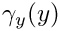
where 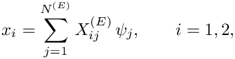 is the number of nodes in the element,  is the 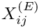-th global (Eulerian) coordinate of the
is the 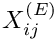-th global (Eulerian) coordinate of the  -th
-th Node in the element, and the 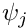 are the element's shape functions, defined in the geometric finite element.
All the constitutive parameters are real. The two components of the displacement field have a real and imaginary part. We store the four real-valued nodal unknowns in the order  and use the shape functions to interpolate the displacements as
and use the shape functions to interpolate the displacements as
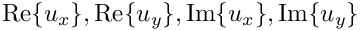
where  is the -th displacement component (enumerated as described above) at the -th
is the -th displacement component (enumerated as described above) at the -th Node in the element.
A specific example: outward propagation of elastic waves from the surface of a cylindrical object
We consider the time-harmonic deformation of a 2D elastic body that occupies the region outside a circle whose diameter we use as the lengthscale  . We impose a displacement 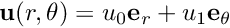 on the inner boundary (to generate a combination of pressure waves and shear waves) and allow for a formulation with perfectly matched layers on the outer boundary of the computational domain, which should allow for a smooth propagation of the elastic waves with no interference from the restriction of the problem to a finite computational domain. 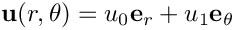 is the unit vector in the radial direction, whereas 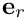 is the unit vector in azimuthal direction.
. We impose a displacement 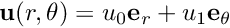 on the inner boundary (to generate a combination of pressure waves and shear waves) and allow for a formulation with perfectly matched layers on the outer boundary of the computational domain, which should allow for a smooth propagation of the elastic waves with no interference from the restriction of the problem to a finite computational domain. 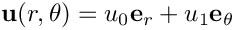 is the unit vector in the radial direction, whereas 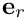 is the unit vector in azimuthal direction.
It is easy to find an analytical solution of this problem by working in polar coordinates and exploiting the axisymmetry of the solution by writing the displacements as or 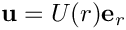. The displacement 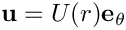 is then governed in both cases by an equation of type
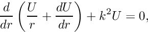
where 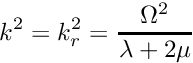 for the radial component and 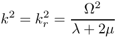 for the azimuthal component. We also note that
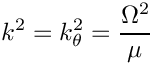
are the non-dimensional Lame parameters. The solution of these equations is given in each case by:
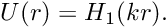
where is the Hankel function of first kind. The two solutions can then be converted to Cartesian coordinates and added together in an appropriate manner. The details of the procedure can be found in the GlobalParameters::exact_u() function.
We note that even though a relatively simple analytical solution (in polar coordinates!) exists for this problem, it is a non-trivial test case for our code which solves the governing equations in Cartesian coordinates. It is also a highly relevant test case in the context of testing perfectly matched layers, since the solution contains both shear and compression waves.
Results
The discretised geometry is shown below. We choose a circle of radius in a computational domain otherwise set to , with a PML thickness of in each dimension, spanned by elements.

The figures below show "carpet plots" (on the left) of the real and imaginary parts of the exact (green) and computed (blue) horizontal displacement for and . Comparing the two solutions shows good agreement and hence an efficient damping given by the perfectly matched layers. We can also observe this by taking a one-dimensional slice from point to point and visualising the profiles of the exact and computed solutions, shown on the right. The green line represents the profile of the exact solution, whereas the blue dots are extracted from the profile of the computed solution.


To demonstrate that the resulting displacement field is indeed axisymmetric, we present plots of the real and imaginary parts of the radial displacement, and .


Global parameters and functions
As usual, we define all non-dimensional parameters in a namespace where we also define the exact solution which is imposed at the inner boundary. We omit the (lengthy) listing of the exact solution.
The driver code
We start by reading the command line arguments, which allow the specification of the perfectly matched layers in terms of number of elements and thickness.
After extracting the relevant information from the command line we continue by computing the dependent parameters.
Next, we create the elasticity tensor and set up the problem (discretised with six-noded triangular elements).
and perform the actual computation and the post-processing of the results:
The problem class
The Problem class is very simple and is very similar to that employed for the solution of the classical time harmonic linear elasticity problem with traction boundary conditions. We provide helper functions to create the PML meshes and to apply the boundary conditions (mainly because these tasks have to be performed repeatedly in the spatially adaptive version this code which is not discussed explicitly here; but see Comments and Exercises ).
The private member data includes pointers the bulk mesh
and to the various PML sub-meshes
The problem constructor
We start by creating the Circle object that defines the inner boundary of the domain. The radius has been defined as part of the Global_Parameters definition:
and define the polygonal outer boundary of the computational domain.
Next we define the curvilinear inner boundary in terms of two TriangleMeshCurviLines which define the hole in the domain:
We specify the mesh parameters (including a target element size)
and build the bulk mesh
We create the PML meshes and add them (and the solid mesh) to the Problem's collection of sub-meshes and build the global mesh.
Next we pass the problem parameters to all elements via calling
ElasticAnnulusProblem<ELASTICITY_ELEMENT>::complete_problem_setup() discussed below (remember that even the elements in the PML layers need to be told about these since they adjust the and functions in terms of these parameters), apply the boundary conditions and assign the equation numbers.
The setup of the problem is now complete.
Completing the problem setup
We pass the problem parameters to all elements, which are used in the equation construction and perfectly matched layer definition.
We pin all four nodal values (representing the real and imaginary part of the two displacement components) on the inner boundaries (boundaries 0 and 1; see enumeration of the boundaries in the constructor) and assign the desired boundary values.
Post-processing
As expected, the doc_solution(...) member function documents the computed solution. We are particularly interested in the computed solution and the exact solution for comparison purposes
We also output the solution in the perfectly matched layers themselves and document the norm of the solution, the wall clock time and number of degrees of freedom.
Comments and Exercises
Comments
- If you inspect the driver code you will notice that it also contains relevant code to perform spatially adaptive simulations of the problem – the adaptive version of the code is selected with
#ifdefs. - The choice for the absorbing functions in our implementation of the PMLs is not unique. There are alternatives varying in both order and continuity properties. The current form is the result of several feasibility studies and comparisons found in Bermudez et al. For Helmholtz equations these damping functions produce an acceptable result in most practical situations without further modifications. For very specific applications, alternatives may need to be used and can easily be implemented within the existing framework.
Exercises
Changing perfectly matched layer parameters
Confirm that only a relatively small number of PML elements (across the thickness of the PML layer) is required to effectively damp the outgoing waves. It is also interesting to explore the effect of increasing the number of elements of the mesh inside the perfectly matched layers.
Another parameter that can be adjusted is the geometrical thickness of the perfectly matched layers. In the case of linear elasticity (as opposed to for example the Helmholtz equation), the thickness of these layers must be relatively large to obtain the best results. Try to explain why and take note of the differences between the two mentioned problems.
Spatial adaptivity
The driver code discussed above already contains the straightforward modifications required to enable spatial adaptivity. Explore this (by recompiling the code with -DADAPTIVE) and explain why spatial adaptivity is not particularly helpful for the test problem discussed above.
Linear and cubic finite elements
The driver code also contains (commented out) modifications that allow the simulation to be performed with three-node (linear) and ten-node (cubic) triangles. Explore the performance of these elements and confirm that the helper functions correctly create matching (four-node and sixteen-node) quad elements in the PML layers.
Default values for problem parameters
Following our usual convention, we provide default values for problem parameters where this is sensible. Some parameters, such as the elasticity tensor, do need to be set since there are no obvious defaults. If oomph-lib is compiled in PARANOID mode, an error is thrown if the relevant pointers haven't been set. Without paranoia, you get a segmentation fault...
Confirm that this is the case by commenting out the relevant assignments.
Non-convex PML boundaries
As discussed above, we currently provide helper functions to attach PML layers to axis-aligned boundaries of 2D meshes with convex outer boundaries. Essentially, this restricts us to rectangular computational domains. Extend this capability by developing methodologies to
- deal with non-convex domain boundaries. We suggest you create PML meshes for the non-convex corners first, then create the axis-aligned meshes (note that these have to share nodes with the already-created elements that occupy the non-convex corners), and then create the corner meshes for the convex corners (as before). When you're done, let us know – this would be a really useful addition to oomph-lib's machinery. We're happy to help!
- Repeat the same exercise in 3D – somewhat less trivial (so we're even keener for somebody to have a go!)
Source files for this tutorial
- The source files for this tutorial are located in the directory:
demo_drivers/pml_time_harmonic_linear_elasticity/ - The driver code is:
demo_drivers/pml_time_harmonic_linear_elasticity/time_harmonic_elasticity_driver.cc
PDF file
A pdf version of this document is available.